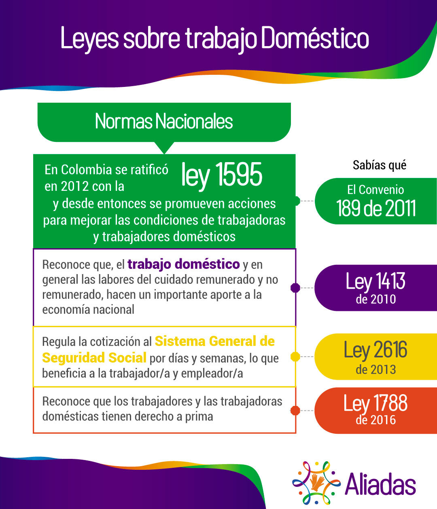

<ion-header [translucent]="true">
  <ion-toolbar>
    <ion-buttons slot="end" class="menu-burguer">
      <ion-menu-button></ion-menu-button>
    </ion-buttons>
    <ion-img src="../../assets/images/aliadas-logo.png" class="logo"></ion-img>
  </ion-toolbar>
  <ion-img src="../../assets/images/color-top.jpg" class="bar-logo"></ion-img>
</ion-header>

<ion-content [fullscreen]="true">
  <ion-header collapse="condense">
    <ion-toolbar>
      <ion-title size="large"></ion-title>
    </ion-toolbar>
  </ion-header>

  <ion-content class="content">
    <div></div>
    <div>
      
    </div>
    <div>
      
    </div>
    <div>
      
    </div>
    <div>
      
    </div>
    <div>
      
    </div>
    <div>
      
    </div>
    <div class="container-encuesta">
      <div>Ser empleador/a y derechos de las trabajadoras domésticas</div>
      <div>
        <ion-button class="button-encuesta" [routerLink]="['/encuesta']">Hacer Encuesta</ion-button>
      </div>
    </div>
  </ion-content>